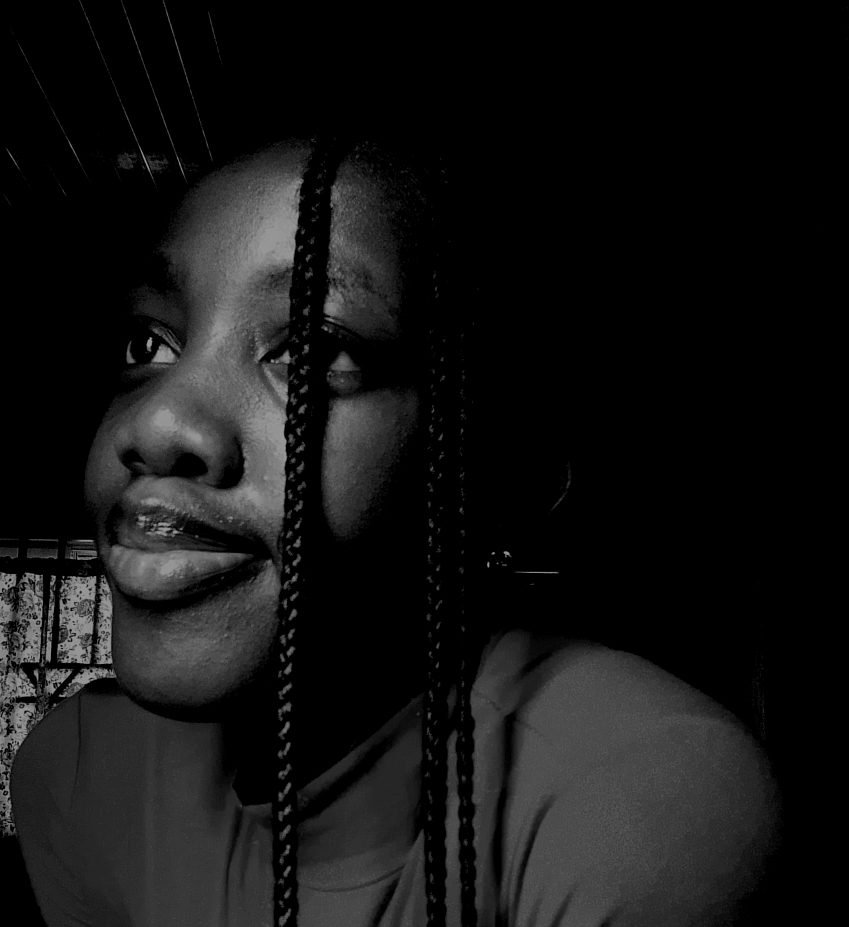
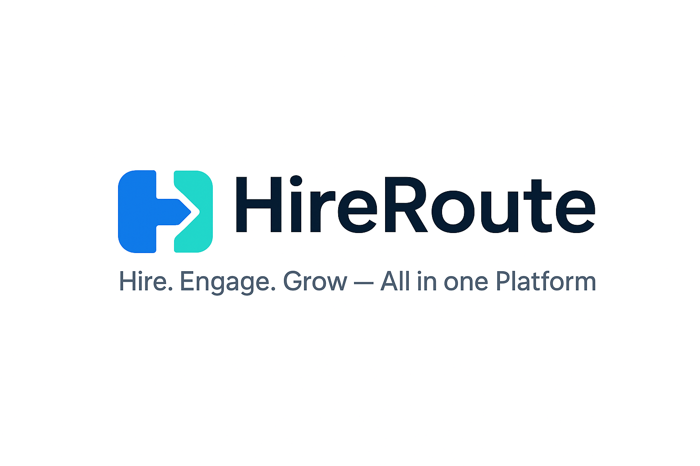
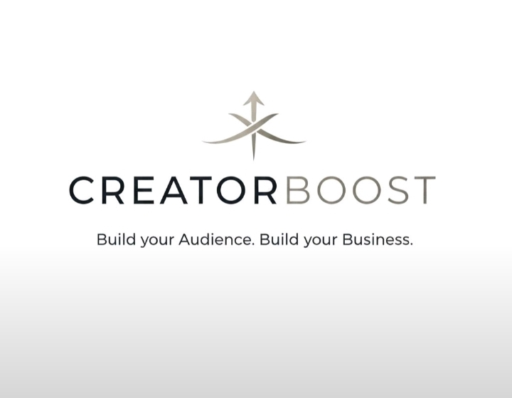

User research and discovery
I gather user feedback, analyze pain points, and translate insight into product opportunities that are grounded in real needs.
Product Manager / Front-End Developer / UX-Minded Collaborator
I am Sharon Adebukola, a product manager and front-end developer with a strong interest in user experience design. I enjoy turning insights into product direction and translating ideas into responsive, user-friendly interfaces that balance business goals, usability, and delivery.

About Me
I am a motivated product manager with experience in product strategy, user research, and cross-functional collaboration. My background in front-end development helps me move comfortably between planning what should be built and shaping how it should feel for users.
I enjoy turning user insights into actionable plans, refining product ideas, and coordinating teams around value-driven outcomes. At the same time, I care deeply about responsive layouts, clean interfaces, and digital experiences that feel intuitive from the first interaction.
That combination allows me to contribute both strategically and practically, from discovery, prioritization, and documentation to front-end implementation, UX refinement, and developer collaboration.
Core Strengths
I gather user feedback, analyze pain points, and translate insight into product opportunities that are grounded in real needs.
I build clean, responsive interfaces with attention to usability, layout, clarity, and the small details that make products easier to use.
I help teams define goals, evaluate features, and plan roadmaps that connect delivery work to business value and measurable outcomes.
I think carefully about user flow, readability, responsiveness, and interaction patterns so design decisions support both experience and outcomes.
I work comfortably with design, engineering, and stakeholders, using clear documentation and agile coordination to keep teams aligned.
I bridge strategy and execution by turning product ideas into practical requirements, interface decisions, and actionable next steps for delivery.
Experience
Collaborating with a cross-functional team to conceptualize, validate, and refine product ideas using Agile and Lean practices.
Conducting user research and market analysis to support feature prioritization, strategic planning, roadmap discussions, and sprint coordination.
Built responsive and accessible web interfaces using HTML, CSS, and JavaScript while collaborating with design and backend teams to improve usability and product functionality.
Supported client training sessions, contributed to marketing efforts for in-house software products, and assisted during 3MTT technical classes.
Earned a B.Sc. in Computer Science, strengthening my technical foundation and broadening my perspective on digital product development.
Projects

Co-led the design of a recruitment platform built to connect companies with qualified talent while improving engagement and retention.
Defined product goals, user personas, success metrics, and interface direction while contributing to wireframing, prototyping, and user-centered feature decisions.

Developed a product concept to help content creators improve engagement and manage audience interactions more effectively.
Led research, roadmap planning, feature ideation, and experience shaping while coordinating with a four-person cross-functional team and conducting user interviews.
I bring a hybrid perspective that combines product thinking, front-end understanding, documentation, and collaborative execution.
That mix helps me move between research, interface decisions, planning, and delivery conversations with confidence.
What I Bring
I help shape ideas through user research, market analysis, problem framing, and early validation work.
I build and refine responsive interfaces with HTML, CSS, and JavaScript, keeping usability, structure, and polish in view.
I support sprint planning, documentation, prioritization, and team alignment so product work stays organized and outcome-focused.
Skills & Tools
User research, feedback analysis, feature prioritization, usability testing, product roadmapping, and Agile or Scrum practices.
HTML, CSS, JavaScript, responsive design, layout structuring, UI refinement, and building interfaces that feel clear and approachable.
Jira, Confluence, Figma, GitHub, Slack, Microsoft Teams, and Canva for planning, collaboration, design thinking, and execution.
Contact
I am currently open to product opportunities, front-end roles, internships, and collaborative work. Send a message and you will be redirected to WhatsApp so you can reach me quickly.